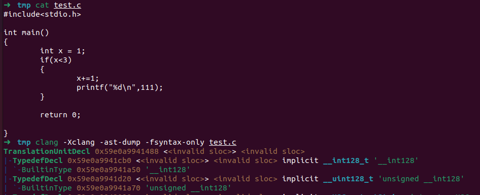

逆波兰表示法
逆波兰表示法（英语：Reverse Polish notation，缩写RPN，或逆波兰记法、逆卢卡西维茨记法），是一种由波兰数学家扬·卢卡西维茨于1920年引入的数学表达式形式，在逆波兰记法中，所有操作符置于操作数的后面，因此也被称为后缀表示法、后序表示法。逆波兰记法不需要括号来标识操作符的优先级。
基本逻辑:
1 | 有输入 |
以一个简单的例子来看：中缀表达式"5 + ((1 + 2) * 4) - 3"用逆波兰表示法写作 “5 1 2 + 4 * + 3 -”
逆波兰表示法与抽象语法树
抽象语法树（AST）本身是一种树的数据结构，其具体的存在形式可以是由编程语言中的数据结构实现存储在内存中，比如嵌套数据结构、节点对象、列表，也可以是具象的文件存储，比如json文本。
以这样一句简单的算术运算为例：
1 | const x = 1 + 2; |
其AST用json表示为：
1 | { |
有了前文的逆波兰表示法的铺垫，我们生成一棵AST的步骤变得十分轻松。
以只包含运算数和运算符的程序表达式为例：
1 * 2 + ( 10 - 2 ) * 5
我们先用肉眼将其转化为逆波兰表达式
1 2 * 10 2 - 5 * +
我们不妨将逆波兰表达式存入栈的数据结构中
接下来从末尾的加号开始依次出栈，构建AST
1 | #第一步取出"+"作为根节点，由于它是运算符，而且需要两个数据，因此它有左右子树。 |
将运算数换成变量参数同理。
以"Modeling and Discovering Vulnerabilities with Code Property Graphs"这篇论文中的一个代码示例为例
将以上源代码转换成AST如下：
其中，叶子节点是操作数，比如变量、常量、宏、类型。
内部节点表示操作符，这些操作符的名称和表示因生成AST的工具而异。但基本都好理解。
仔细分析就会发现其实本质和我们上文的数学表达式构建AST是无二的。
Clang生成抽象语法树示例
可以使用clang –emit-ast input.c生成AST的二进制文件input.ast，也可以直接打印输出如下：

抽象语法树与静态分析
我们直接以一篇2014年S&P的经典静态分析的论文为例，学习基于抽象语法树进行程序分析的工作。
摘要
本文提出了一种基于代码属性图CPG的源代码漏洞检测方法，该方法是一个融合了抽象语法树AST、控制流图CFG和程序依赖图PDG的联合数据结构。本文通过图的遍历来进行常见漏洞检测。本文使用一个图数据库来实现该方案，并在Linux内核源代码中识别了18个以前未知的漏洞，证明了该方案的有效性。
这个工作在当时程序分析和LLM等未发展强大的时候是非常有意义的。而且十分有趣，能将肉眼观测源代码的分析工作转化成数学上图的遍历操作。
抽象语法树
上文已经分析过了。
控制流图
所谓控制流图指的就是描述代码语句的执行顺序，以及执行特定执行路径需要满足的条件。语句和谓词用节点表示，节点之间用有向边连接，表示控制的转移。控制流图暴露了应用程序的控制流，但它们无法提供数据流信息。
简单的理解就是我们程序的执行流程图。
依赖图
依赖图用于确定在指定语句中影响变量值的所有语句和谓词(predicate，表示一个逻辑表达式或函数)。该图有两类边，数据依赖边（D）反映了一个变量对另一个变量的影响，控制依赖边（C）反映了谓词对变量值的影响。
代码属性图
对于三种图稍作修改（比如加上order表示保留原有的结构等，详细请参见论文，这里不过多描述），并结合在一起就生成了代码属性图。我们观察可以发现，代码属性图中的节点都来自抽象语法树，节点之间的边都来自控制流图和依赖图，边代表了谓词之间的关系和数据之间的关系。
属性图的遍历
在属性图中，可根据标签和属性按照一定规则访问图的顶点和边进行遍历。以下方的属性图为例，以下的遍历分别表示：
返回集合X中k=w的所有节点：
$$\mathbf{X = {A,B,C,D}}$$
$$\mathbf{FILTER(X) = { \nu \in X: \mu(\nu,\kappa) = \omega } = {B}}$$
返回集合X中节点所有正向可达、边标签为b、k键的值为w的节点结集合:
$$\mathbf{X = {A}}$$
$$\mathbf{OUT^{k,x}_{b}(X) = \bigcup _{\upsilon \in x} { \nu : (\upsilon,\nu) \in E \wedge \lambda(\upsilon,\nu) = b \wedge \mu{ \nu, \kappa} = \omega } = { B }}$$
返回集合X中节点所有反向可达、边标签为b、k键的值为x的节点结集合。
$$\mathbf{X = {B}}$$
$$\mathbf{OUT^{k,x}_{a}(X) = \bigcup _{\upsilon \in x} { \nu : (\upsilon,\nu) \in E \wedge \lambda(\upsilon,\nu) = a \wedge \mu{ \nu, \kappa} = \omega } = { A }}$$
先返回集合X中节点所有正向可达、边标签为b、k键的值为w的节点集合，再在第一次遍历的基础之上获取可达的节点集合
$$\mathbf{X = {A}}$$
$$\mathbf{OUT(X) \bigcup \limits_{\chi \in X} {y:(x,y)\in E}}$$
$$\mathbf{OUT(X)\circ OUT^{k,x}_b(X) = OUT({B}) = {C}}$$
woc终于把这几个公式用latex写出来了，latex小白累晕。。
case study
上图为libssh中的漏洞代码示例，红色代码中namelen参数为用户输入变量，若namelen为32位无符号数的最大值，则会因为整数溢出为0从而分配仅仅几个字节，导致写入时缓冲区溢出。针对该漏洞可以构建代码属性图遍历如下：
· 某一函数中是否包含求和以及函数调用。TNODES代表从AST的根节点遍历所有的节点，针对该遍历结果再次进行FILTER遍历查找符合条件结果
$$\mathbf{MATCH_{p}(V) = FILTER_{\rho} \circ TNODES(V)}$$
· 这两者是否存在嵌套关系 。先使用ARG(i,f)返回函数名为f的第i个参数的遍历结果，再针对该结果使用MATCH遍历
$$\mathbf{MATCH_{p}(V) \circ ARG^{i}_{f}}$$
others
其余可检测类型示例

手搓latex太累了hhh，这里就直接看图吧
总结
本文提出了一种挖掘大量代码中漏洞的方法。该方法建立在一种新的源代码表示形式——代码属性图的基础上，能够根据图的遍历对常见漏洞进行建模。利用这种表示方式，作者对许多漏洞类型进行了的遍历，包括缓冲区溢出、格式字符串漏洞和内存地址泄漏。此外，作者还通过代码属性图审计了Linux内核，并发现了18个未知的漏洞。代码属性图和图遍历适用于发现常见类型的漏洞，但更重要的是，它们可以很好地定制，以识别特定于代码库的漏洞。通过细化遍历，分析人员可以控制假阳性和假阴性率。
References
https://zh.wikipedia.org/wiki/逆波兰表示法
https://www.freecodecamp.org/news/clang-ast-based-static-analysis-tools/
https://juejin.cn/post/7100082653256220686
https://www.cnblogs.com/zhangke007/p/4714245.html
https://static-analysis.cuijiacai.com/
北京化工大学学报：基于抽象语法树的代码静态自动测试方法研究
论文地址：http://ieeexplore.ieee.org/stamp/stamp.jsp?tp=&arnumber=6956589
如果您喜欢此博客或发现它对您有用，则欢迎对此发表评论。 也欢迎您共享此博客，以便更多人可以参与。 如果博客中使用的图像侵犯了您的版权，请与作者联系以将其删除。 谢谢 ！